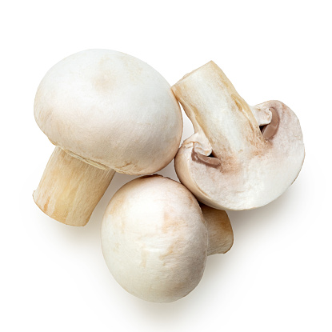

Evolutia ciupercilor
Stramosul comun al ciupercilor si animalelor a fost probabil un organism unicelular flagelat care a trait cu mai mult de un miliard de ani în urma.
O descoperire intr-o ardezie veche de 850 de milioane de ani în Canada este uneori interpretata drept o fosila de ciuperci.
Presupuse descoperiri mai vechi, în China si Australia, cu o varsta de 1,5 miliarde de ani, trebuie inca confirmate ca ciuperci. Primele descoperiri în mare masura nediscutate dateaza din perioada geologica ordoviciana si pot fi atribuite ciupercilor micorizante arboricole.
Ciuperci fosile au fost descoperite de asemenea în chihlimbar intre altele pe depozitele cunoscute carbonifere din Scotia si Anglia, din Triasicul târziu, carnian in Germania si in biodiversitate remarcabila in chihlimbarul canadian cretacic precum si in cel tertiar mexican, si baltic.
In unele dintre aceste descoperiri se gasesc ciuperci care au atacat termite si nematode, fiind inchise de rasina impreuna cu gazdele lor.
In timp ce marea majoritate a ciupercilor care apara astazi nu mai dezvolta flageluri, spori flagelati sau gameti apar in timpul reproducerii ale speciilor din increngatura Chytridiomycota.
Probabil ca ciupercile au parasit apa inainte de plante si au colonizat suprafata de uscat.
Deoarece primele plante terestre cunoscute inca nu au avut radacini reale, traind insa evident in simbioza cu ciuperci micorizante arboricole din diviziunea Glomeromycota, se presupune, ca aceste ciuperci au făcut abia posibil ca plantele sa colonizeze acest taram.
Pasirea cu succes a plantelor nu ar fi fost posibila fara simbioza cu buretii.